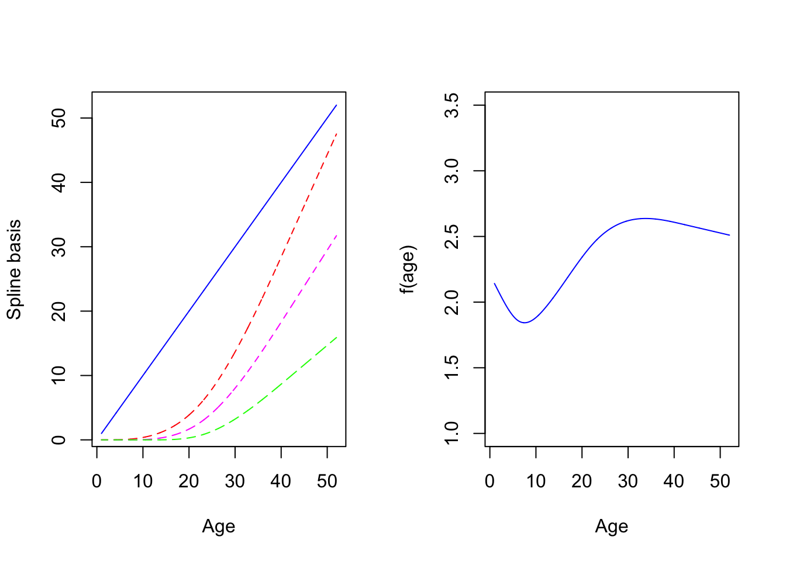

7 Violations of assumptions
Learning objectives
By the end of this week you should:
Be able to run polynomial regression
Know about restricted cubic splines and how they can model nonlinearities
Have a general understanding of the use of flexible techniques to evaluate the shape of a regression function
Be familar with the bootstrap and its use in linear regression
Understand how heteroscedasticity can be handled in practice
Learning activities
This week’s learning activities include:
| Learning Activity | Learning objectives |
|---|---|
| Lecture 1 | 1, 2, 3 |
| Reading | 4 |
| Lecture 2 | 4, 5 |
| Investigations | 2, 4 |
Lecture 1 in R
Lecture 1 in Stata
We have seen how to use residuals to identify non-linearities, this week we will first revisit the issue and introduce new modelling techniques to deal with nonlinear associations.
Polynomial regression
To motivate, we consider data on 892 females under 50 years collected in three villages in West Africa. Investigators are interested in exploring the relationship between age and triceps skinfold thickness, a crude measure of body fat. The dataset is called triceps and include age, thick and logthick, for respectively age in years, triceps skinfold thickness in mm and its logarithm. The figure below displays the the relationship between age and logthick and it is immediately clear that this relationship in nonlinear on such a wide age span. A nonparametric smoother (LOWESS) can be applied to the data and returns the blue fitted line confirming the visual impression.
A simple regression model of the form \(logthick_i=\beta_0+\beta_1 age_i+\epsilon_i\) for \(i=1,\dots,n=892\) would hardly give an approximation of the observed pattern, so the question arises: how can we modify it to make it more realistic? The first strategy is to replace the linear function of age by a cubic polynomial: \(f(age)=\beta_0+\beta_1 age +\beta_2 age^2 + \beta_2 age^3\). The term ``cubic’’ is used because we are fitting a polynomial of degree 3 due to the largest exponent being 3. A quadratic curve could also be fitted but would not be appropriate given the shape of the plot. Such a model is naturally called polynomial regression, irrespective of the degree of the polynomial function \(f(x)\). Although we can define by hand the quadratic and cubic terms it’s preferable to use the built-in tool poly(x,3) in R to define the polynomial (here \(x\) refers to the variable of interest, e.g. \(x=age\)). This leads to a simpler univariate smooth model of the form: \(y_i=f(x_i)+\epsilon_i\) where \(y\) is the generic term for the response (\(y=logthick\) in our example).
The following fit is now obtained and there is clearly some improvement over a linear fit but we may be left with the visual impression that fitting a cubic polynomial is not quite enough to capture the structure of the data, especially around year 10 where the fit does not seem so good.
Although all polynomial coefficients are significant - results not shown -, we should not use significance to decide to include a particular term or not. Another parametrisation based on orthogonal polynomials is often preferable as it is more stable, especially for high-degree polynomials. Using this parametrisation which is the default parametrisation in R yields a non-significant quadratic term. It is nevertheless needed to give the same fit. The F-test (or a LRT test) can help decide whether the cubic polynomial in age is necessary and is, for instance, better than a quadratic polynomial or a simple linear fit. We leave this as an exercise.
The R code for this section and a slightly simpler version for Stata are given below:
R Code
Show the code
# scatter plot and lowess fit
triceps<-read.csv("https://raw.githubusercontent.com/atpinto/RM1/main/Data/triceps.csv")
triceps<-data.frame(triceps)
#colnames(triceps)<-c("age","logthick","thick")
plot(logthick~age,xlab="Age",ylab="Skinfold thickness (log)",data=triceps)
lines(lowess(triceps$logthick ~ triceps$age, f=.2), col=4,lwd=2)Show the code
# scatter plot and cubic polynomial
triceps <- triceps[order(triceps$age),] # order data by age
plot(logthick~age,xlab="Age",ylab="Skinfold thickness (log)",data=triceps)
# polynomial regression + plot
fit.poly <- lm(logthick ~ poly(age,3),data=triceps) #cubic polynomial (orthogonal)
fit.poly <- lm(logthick ~ poly(age,3,raw="TRUE"),data=triceps) # raw polynomial
lines(triceps$age, predict(fit.poly, data.frame(age=triceps$age)), col="red", lwd=2)
Stata code and output
Show the code
import delimited "https://raw.githubusercontent.com/atpinto/RM1/main/Data/triceps.csv"
gen age2 = age^2
gen age3 = age^3
regress logthick age age2 age3
quiet predict pred
twoway scatter logthick age || line pred age, sort
test age2 age3
## compare cubic polynomial fit to linear fit
## (encoding automatically selected: ISO-8859-1)
## (3 vars, 892 obs)
##
##
##
##
## Source | SS df MS Number of obs = 892
## -------------+---------------------------------- F(3, 888) = 198.34
## Model | 65.5210717 3 21.8403572 Prob > F = 0.0000
## Residual | 97.7807168 888 .11011342 R-squared = 0.4012
## -------------+---------------------------------- Adj R-squared = 0.3992
## Total | 163.301788 891 .183279224 Root MSE = .33183
##
## ------------------------------------------------------------------------------
## logthick | Coefficient Std. err. t P>|t| [95% conf. interval]
## -------------+----------------------------------------------------------------
## age | -.0380582 .0066236 -5.75 0.000 -.0510579 -.0250586
## age2 | .0032826 .00034 9.65 0.000 .0026152 .0039499
## age3 | -.0000481 4.81e-06 -9.98 0.000 -.0000575 -.0000386
## _cons | 2.064005 .0328653 62.80 0.000 1.999503 2.128508
## ------------------------------------------------------------------------------
##
##
##
##
## ( 1) age2 = 0
## ( 2) age3 = 0
##
## F( 2, 888) = 50.09
## Prob > F = 0.0000
##
## Unknown #commandRestricted cubic splines
The disadvantage of polynomials is that they tend to fit the data globally and are not very good locally, for instance around year 10 for logthick. One way to get around this issue is to partition the range of \(age\) (or the covariate \(x\) in general) into smaller intervals, utilising a small number of points called knots. We can then fit (cubic) polynomials locally but by doing this we will get discontinuities. A simple remedy is to impose constraints on these polynomials so that the global result is a smooth function. We typically do this by forcing the successive derivatives of the function to be continuous up to some order (e.g. 2). The resulting function is called a spline. Different splines exist and a common type consists of portions of cubic polynomials in the middle joined together at the knots that become linear in the edges (i.e before the first knot and after the last one). Such splines are called Restricted Cubic Splines (RCS) with RCS(4) denoting a RCS with 4 knots. Restrictions are imposed to the different parts to yield a smooth function. It is not necessary to know their complex algebraic expression but we can see how the look on Figure 7.1 below:

** Figure 7.1:** Spline basis functions and fitted line
There are 4 terms because we choose 5 knots (i.e, d.f. = number of knots minus 1) noted \(S_1(age)=age\) in blue, \(S_2(age)\) in red, \(S_3(age)\) in magenta, \(S_4(age)\) in green on the left panel. Each individual spline function (called spline basis) should not be interpreted individually. What matters is their ``combined effect”, i.e the function \(f(age)=b_0 + b_1S_1(age)+b_2S_2(age)+b_3S_3(age)+b_4S_4(age)\) which is very smooth and seems to capture well the features of the data. Here the coefficients \(b_0,b_1,\dots,b_4\) where calculated by fitting \(f(a)\) to the data. Such a fit is possible using standard commands since the function linear in the coefficients despite its nonlinearity in age.
Syntax and outputs
This is how you can fit such a model in R. This requires a slightly different syntax from what you have been using so far. R makes use of the rms library and the command ols instead of lm. The spline function itself is specified by adding rcs within the formula yielding:
Show the code
require(rms)
ddist <- datadist(triceps)
options(datadist='ddist')
fit.rcs <- ols(logthick ~ rcs(age,4),data=triceps)The command rcs(age,4) specifies a RCS in age with 4 knots placed at their default location. Note that the first two lines after calling the rms library are not absolutely needed to get the fit but there will be used to plot the splines, so it’s recommended to add them anyway. The output is given below:
Show the code
fit.rcs
## Linear Regression Model
##
## ols(formula = logthick ~ rcs(age, 4), data = triceps)
##
## Model Likelihood Discrimination
## Ratio Test Indexes
## Obs 892 LR chi2 543.46 R2 0.456
## sigma0.3162 d.f. 3 R2 adj 0.454
## d.f. 888 Pr(> chi2) 0.0000 g 0.322
##
## Residuals
##
## Min 1Q Median 3Q Max
## -1.172181 -0.187992 -0.007064 0.178250 1.082001
##
##
## Coef S.E. t Pr(>|t|)
## Intercept 2.1969 0.0335 65.53 <0.0001
## age -0.0612 0.0062 -9.91 <0.0001
## age' 0.7157 0.0508 14.09 <0.0001
## age'' -1.4045 0.0993 -14.14 <0.0001You may notice that the syntax is slightly different from the standard way to display an output after typing the lm command since summary() is not used. The display is rather unsual and indicates the coefficients for the various spline bases with the notation \(age^\prime\) and \(age^{\prime\prime}\) corresponding to two additional splines terms \(S_2(a)\) and \(S_3(a)\) that are never interpreted separarely.
The Stata syntax still uses the usual regress command but it’s preceeded by a command mkspline explaining what splines need to be fitted. Below the syntax and output in Stata.
Stata code and output ::: {.cell collectcode=‘true’}
Show the code
import delimited "https://raw.githubusercontent.com/atpinto/RM1/main/Data/triceps.csv"
mkspline age_spl = age, cubic nknots(4)
regress logthick age_spl*
## (encoding automatically selected: ISO-8859-1)
## (3 vars, 892 obs)
##
##
##
## Source | SS df MS Number of obs = 892
## -------------+---------------------------------- F(3, 888) = 248.32
## Model | 74.4994322 3 24.8331441 Prob > F = 0.0000
## Residual | 88.8023563 888 .100002653 R-squared = 0.4562
## -------------+---------------------------------- Adj R-squared = 0.4544
## Total | 163.301788 891 .183279224 Root MSE = .31623
##
## ------------------------------------------------------------------------------
## logthick | Coefficient Std. err. t P>|t| [95% conf. interval]
## -------------+----------------------------------------------------------------
## age_spl1 | -.0613985 .006191 -9.92 0.000 -.0735492 -.0492478
## age_spl2 | .7135853 .050668 14.08 0.000 .6141424 .8130283
## age_spl3 | -1.401866 .0991293 -14.14 0.000 -1.596421 -1.207311
## _cons | 2.197331 .0335518 65.49 0.000 2.131481 2.263182
## ------------------------------------------------------------------------------:::
The command mkspline age_spl = age, cubic nknots(4) asks Stata to create a RCS in age with 4 knots, Stata will generate the correspponding terms called age_spl1, age_spl2 and age_spl3. Note that age_spl1 is always age so that the syntax is equivalent to regress logthick age age_spl1 age_spl2. The generic command with * makes sure that all terms are included. Some other options are available that you can explore using the help.
What remained to be discussed is: 1) how do we choose the knots?; 2) how many knots do we choose?; and possibly 3) how do we know that the splines are needed?
Choosing the knots and their number
Typically a small number of knots is recommended, say between 3 and 5. We chose 5 knots earlier because we have a lot of data but 4 is ofen appropriate. Their location is critical and up to the investigator. A default choice have been fortunately implemented in Stata and R at specific quantiles of the variable of interest. The two figures below gives you the data and 2 different fits, one with 4 knots located using the default (Figure 7.2) and at age 10, 20, 35, 45 (Figure 7.3). We added the vertical dotted lines to indicate their location.
** Figure 7.2:** A RCS spline fit with 4 knots (default location)
** Figure 7.3:** A RCS spline fit with 4 knots at age 10, 20, 35 and 45.
We clearly see that the default choice (Figure 7.2) gives a better fit visually than the manual choice with knots at 10, 20, 35, 45 (Figure 7.3), the first two knots being too high. By default, the knots in Figure 7.2 are chosen at the \(.05^{th}\), \(.35^{th}\), \(.65^{th}\) and $.95^{th} quantiles of age, e.g the first knot is at age 1.2775 (!), the second at 8.1955. Note in Figure 7.3 that the function is indeed linear for extreme age values (blue dotted line). This is also the case for Figure 7.2 but it’s less apparent on the plot.
Do we need the splines? Which fit should we choose?
Because the first spline basis is always the variable of interest (here age) we can use a F-test to test whether the added terms are needed. This is typically carried out in R using the anova command following the fit obtained previously. The F-test concludes that the additional terms are indeed needed with either the default choice of knots or the one chosen by the investigator (p< 0.0001).
The R and Stata code to fit splines with explanation is below.
R Code
Show the code
# Figure 7.2
par(mfrow=c(1,1))
# sort the data by increasing age
triceps<-triceps[order(triceps$age),]
# top panel: default
ddist <- datadist(triceps)
options(datadist='ddist')
fit.rcs4a <- ols(logthick ~ rcs(age,4),data=triceps)
pred4a<-predict(fit.rcs4a)
plot(logthick~age, xlab="Age",ylab="Skinfold thickness (log)", data=triceps)
lines(triceps$age,pred4a, col="red", lwd=2,lty=2)
abline(v=quantile(triceps$age,c(0.05,0.35,0.65,0.95)),lty=2,col="red")
Show the code
# Testing whether the additional splines terms are necessary
anova(fit.rcs4a)
# look at age nonlinear with 2 df. Highly significant. Splines necessary
# Figure 7.3
fit.rcs4b <- ols(logthick ~ rcs(age,c(10,20,35,45)),data=triceps)
pred4b<-predict(fit.rcs4b)
plot(logthick~age, xlab="Age",ylab="Skinfold thickness (log)",data=triceps)
lines(triceps$age,pred4b, col="blue", lwd=2,lty=2)
abline(v=c(10,20,35,45),lty=2,col="blue")
mini<-max(which(triceps$age <10))
maxi<-min(which(triceps$age >=45))-1
lines(triceps$age[mini:maxi],pred4b[mini:maxi], col="red", lwd=2,lty=1)Show the code
# poor fit for lower age
# Figure without fancy colours, do not run the last 3 lines
# Testing whether the additional splines terms are necessary
anova(fit.rcs4b)
# look at age nonlinear with 2 df. Highly significant. Splines necessaryIndications on how to produce a simpler figure in R were also provided. We don’t suggest you produce complex figures like this one. Even the vertical lines displaying the knots location are often omitted.
Stata code and output
Show the code
## Figure 7.2, default knots, and fit
import delimited "https://raw.githubusercontent.com/atpinto/RM1/main/Data/triceps.csv"
mkspline age_spl = age, cubic nknots(4) displayknots
regress logthick age_spl*
predict pred
twoway scatter logthick age, xline(1.243 8.1865 17.469 42.72) || line pred age, sort clstyle(solid)
# Testing whether the additional splines terms are necessary
test age_spl2 age_spl3
## Figure 7.3, knots at 10, 20, 35 and 45, and fit
drop pred age_spl*
mkspline age_spl = age, cubic knots(10 20 35 45)
matrix list r(knots)
regress logthick age_spl*
predict pred
twoway scatter logthick age, xline(10 20 35 45) || line pred age, sort clstyle(solid)
# Testing whether the additional splines terms are necessary
test age_spl2 age_spl3
## Unknown #command
## (encoding automatically selected: ISO-8859-1)
## (3 vars, 892 obs)
##
##
## | knot1 knot2 knot3 knot4
## -------------+--------------------------------------------
## age | 1.243 8.1865 17.469 42.72
##
##
## Source | SS df MS Number of obs = 892
## -------------+---------------------------------- F(3, 888) = 248.32
## Model | 74.4994322 3 24.8331441 Prob > F = 0.0000
## Residual | 88.8023563 888 .100002653 R-squared = 0.4562
## -------------+---------------------------------- Adj R-squared = 0.4544
## Total | 163.301788 891 .183279224 Root MSE = .31623
##
## ------------------------------------------------------------------------------
## logthick | Coefficient Std. err. t P>|t| [95% conf. interval]
## -------------+----------------------------------------------------------------
## age_spl1 | -.0613985 .006191 -9.92 0.000 -.0735492 -.0492478
## age_spl2 | .7135853 .050668 14.08 0.000 .6141424 .8130283
## age_spl3 | -1.401866 .0991293 -14.14 0.000 -1.596421 -1.207311
## _cons | 2.197331 .0335518 65.49 0.000 2.131481 2.263182
## ------------------------------------------------------------------------------
##
## (option xb assumed; fitted values)
##
##
## Unknown #command
##
## ( 1) age_spl2 = 0
## ( 2) age_spl3 = 0
##
## F( 2, 888) = 100.05
## Prob > F = 0.0000
##
## Unknown #command
##
##
##
## r(knots)[1,4]
## knot1 knot2 knot3 knot4
## age 10 20 35 45
##
##
## Source | SS df MS Number of obs = 892
## -------------+---------------------------------- F(3, 888) = 171.60
## Model | 59.9281934 3 19.9760645 Prob > F = 0.0000
## Residual | 103.373595 888 .116411706 R-squared = 0.3670
## -------------+---------------------------------- Adj R-squared = 0.3648
## Total | 163.301788 891 .183279224 Root MSE = .34119
##
## ------------------------------------------------------------------------------
## logthick | Coefficient Std. err. t P>|t| [95% conf. interval]
## -------------+----------------------------------------------------------------
## age_spl1 | .012615 .0024697 5.11 0.000 .007768 .0174621
## age_spl2 | .0697431 .0132989 5.24 0.000 .0436422 .0958439
## age_spl3 | -.1995404 .033615 -5.94 0.000 -.2655144 -.1335663
## _cons | 1.901356 .025584 74.32 0.000 1.851144 1.951568
## ------------------------------------------------------------------------------
##
## (option xb assumed; fitted values)
##
##
## Unknown #command
##
## ( 1) age_spl2 = 0
## ( 2) age_spl3 = 0
##
## F( 2, 888) = 23.36
## Prob > F = 0.0000Now we have produced 3 different fits of the same data (ignoring the RCS(5) fit given to show what a spline function is): a) cubic polynomial; b) RCs(4), default knots; c) RCS(4), knots at age 10, 20 35, 45. Visually, it’s clearly that b) gives the better fit, so this is the one we’ll choose. There are many other fits you could get by playing with the number of knots and their location, so you could add them to the list. There is a way to compare such models that are not nested, we defer the explanation to week 8 but hopefully the approach agrees with the visual impression.
Interpretation
There are several ways you can interpret the results after fitting a spline model to the data and concluding that splines are indeed necessary. Let’s for instance consider the RCS(4) model used for the triceps data. The simplest (and possibly most common) way is to display a plot like Figure 7.2 or only the spline function with its 95% CI and interpret it qualitatively. Here log-thickness decreases with age until the age of 8-9 and starts to increase again to reach a maximum slighlty above 2.5 around 30-35. From then on, it does not change much with a very slow reduction as women get older (up to the maximum age in the data, i.e. 52).
The second way is to try to quantify the relationship. One might wonder what the average change in log-thickness per each additional year of age is? The problem is more complicated than usual as we have fitted a function of age, \(f(age)=b_0+b_1age+b_2S_2(age)+b_3S_3(age)\). Any increment of age will also affect the spline functions \(S_2(age)\) and \(S_3(age)\) so we can not interpet each coefficient separately. However, the same principle applies and, at least theoretially, we can compute the marginal change in log-thickness associated with a i year increment. To make things simpler, let’s choose a particular age, say 10. What we need to do is compute the (expected) change in log-thickness for a change in age from 10 to 11. This amounts to computing the difference: \(d=f(11)-f(10)=b_1+b_2[S_2(11)-S_2(10)]+b_3[S_3(11)-S_3(10)]\). This is a linear combination of the model coefficients \(b_1\), \(b_2\), \(b_3\) so in principle we should be able to estimate this but the difficulty is to get the ``weights” \(w_2=S_2(11)-S_2(10)\) and \(w_3=S_3(11)-S_3(10)\) that involve the spline basis functions. The weight of age in \(f(age)\) is always one here by construction.
OPTIONAL: Regarding this calculation, Stata users have the edge since the software provides an approximation through the derivative since \(f(11)-f(10)\simeq f'(10)\). In general, \(f(a+1)-f(age))\simeq f'(a)\) thanks to a Taylor expansion. The R users don’t have this luxury and have to work out for themselves what this difference is. For that reason, what follows is considered optional but Stata users should not have any problem to run the few lines of code that are needed. Note that the splines have to be generated using the command mkspline2 command instead of mkspline. This command and the one that computes the derivative are available once a user-defined code has been installed (type: ssc install postrcspline).
Stata code
Show the code
import delimited "https://raw.githubusercontent.com/atpinto/RM1/main/Data/triceps.csv"
mkspline2 age_spl = age, cubic nknots(4)
regress logthick age_spl*
mfxrcspline, gen(delta lower upper)
sort age
## --------------------------------------------------
## this additional command allows you to browse (only)
## the new variables created. Deactivated here.
## You can also browse the data manually
## ---------------------------------
## br age delta lower upper
## (encoding automatically selected: ISO-8859-1)
## (3 vars, 892 obs)
##
## command mkspline2 is unrecognized
## r(199);
##
## r(199);The code plots the derivative as a function of age and produces the marginal difference per additional year of age for each datapoint in the triceps dataset. The last two lines allow us to sort the data and list all the differenes (variable delta and lower and upper for the 95% CI). If we look at what was produced, we can see that for a women aged 10, the average change in log-thickness for a 1-year change in age is: 0.026, 95% CI=0.022 ; 0.0299). We choose 10 since it is an age that we have in the dataset to make things simpler. This can be obtained by looking at the results (typebr age delta lower upper to see all differences). We typically talk about the rate of change in log-thickness associated with age. Had we chosen age=27, we would have obtained: 0.017, 95%CI=(0.0144 ; 0.0194). Of course, when age is beyond the last knot (i.e. 42.7 years) or prior to the first knot, the rate of change become constant since by definition the RCS is linear in the tails.
R-users have to work a lot harder to get something similar. The code below explains how it’s done and give you some explanation. Results may be sligthly different since we are not approximating the difference here. An optional video is available so maybe R-users can watch this video first.
Lecture 1b in R [OPTIONAL - help with an interpretation that is not directly provided in R]
R code
Show the code
triceps<-read.csv("https://raw.githubusercontent.com/atpinto/RM1/main/Data/triceps.csv")
triceps<-data.frame(triceps)
triceps <- triceps[order(triceps$age),]
# fit RCS(4) to the data
require(rms)
ddist <- datadist(triceps)
options(datadist='ddist')
fit.rcs4 <- ols(logthick ~ rcs(age,4),data=triceps)
# Comment
# -------
age.val<-c(10) # Choose a particular age, here 10
kk=attributes(rcs(triceps$age,4))$parms # get the knots
tt<-rcspline.eval(age.val,knots=kk,nk=4,inclx=TRUE) # evaluate the spline functions at age=10
tt1<-rcspline.eval(age.val+1,knots=kk,nk=4,inclx=TRUE) # evaluate the spline functions at age=11 (add 1)
diff=tt1-tt # compute the differences
c(diff)
## [1] 1.000000000 0.148753527 0.009424536
# these are the "weights" you need to use in lincom or glht
# for coefficients beta1, beta2, beta3 (all splines terms)
# what I called w_1=1, w_2 and w_3. Note that w_1=1 because the
# first basis function is age, with the two others used to
# model non-linearities. In their absence we would go
# back to the usual interpretation and therefore w1=1
# is expected.
require(multcomp)
## Loading required package: multcomp
## Loading required package: mvtnorm
## Loading required package: survival
## Loading required package: TH.data
## Loading required package: MASS
##
## Attaching package: 'TH.data'
## The following object is masked from 'package:MASS':
##
## geyser
test <- rbind("test marginal effect at that age" = c(0,diff))
# the leading 0 is for the intercept coeff (unused)
lincom<-glht(fit.rcs4, linfct=test)
summary(lincom)
##
## Simultaneous Tests for General Linear Hypotheses
##
## Fit: ols(formula = logthick ~ rcs(age, 4), data = triceps)
##
## Linear Hypotheses:
## Estimate Std. Error z value Pr(>|z|)
## test marginal effect at that age == 0 0.032036 0.002092 15.31 <2e-16 ***
## ---
## Signif. codes: 0 '***' 0.001 '**' 0.01 '*' 0.05 '.' 0.1 ' ' 1
## (Adjusted p values reported -- single-step method)
# you can then get the 95% CI "by hand"
lower=0.032036-1.96*0.002092
upper=0.032036+1.96*0.002092
c(lower,upper)
## [1] 0.02793568 0.03613632
# 95% CI=( 0.02793568 ; 0.03613632)
# slightly different results in R (no approximation)
# you can repeat the process by choosing another age value (e.g. 27) but make sure your
# update the manual calculation of the 95% CIInvestigation
The objective of this activity is to become familiar with RCS using the hers data
Start by reading p. 113 - 114 of Vittinghof et al. (2012) where the authors model HDL as RCS of BMI adjusted for a few covariates, namely age, nonwhite, smoking and drinkany and fit a simple model with these covariates. We suspect the association with BMI may not be linear (see Table 4.20, p. 111 for more)
Fit a RCS in BMI with 4 knots while adjusting for the other covariates. Does it change the conclusion regarding the linearity of BMI? Test whether the additional spline terms in BMI are necessary for this data? Note that if you want to reproduce the results of Table 4.21 p. 114, you need to use age10 (instead of age or agec) and have 5 knots (not requested).
Plot the fitted line with its 95% band. To get a nice plot you need to fix the other covariates than BMI. One way to do this is to set these covariates at the mean or median value.
R users: The latter is provided by the R command plot(Predict(fit, BMI)) where fit is the RCS fit obtained earlier. Stick to the plots obtained after fitting a RCS using rms and ols (and avoid using lm).
Stata users: You may have to be cautious here as there are other covariates than BMI. Again, follow the recommendation of Vittinghof et al. (2012) and use the postrcspline package. Recreate the splines using the command mkspline2. The command adjustrcspline used in combination with at() where you specify the other covariate values will give you a nice plot. The choice is up to you but we could use: the mean (or the median) age in the sample for age and 0 for nonwhite, smoking and drinkany.
Change the location of the 4 knots and refit the model. Try also a model with a different number of knots. Does it change your conclusion? Provide a qualitative interpretation of the BMI effect in the model you decide to keep.
Do we need a RCS model for age?
Fractional polynomials and other methods
RCS are not the only approach we could use to model nonlinearities. Other types of splines exist including smoothing splines that impose a penalty for a lack of smoothness, they are more nonparametric by nature. We would like to say a few words about fractional polynomials that were introduced by Royston and Atlman (1994) and further developed since then. For the sake of simplicity, we describe the procedure using a model with a single continuous covariate (called \(x\)). One way to generalise the linear combination \(\beta_0 +\beta_1 x\) is to replace it by a special type of polynomial that might include logarithms, noninteger powers, and repeated powers. One can show that, With a suitable range of powers, such polynomials provide a considerable range of functional forms in \(x\) that are useful to model real data. They are called ``Fractional Polynomials’’ (FP) to distinguish from standard polynomials. The default set of powers from which FP powers are selected is typically \(\{−2, −1, −0.5, 0, 0.5, 1, 2, 3\}\), with 0 signifying \(\log\). There is also the convention that, every time a power repeats in an FP function of \(x\), it is multiplied by another \(\log(x)\). To describe the FP we typically list the series of powers that will be used. For example, a FP in \(x\) with powers \((−1, 0, 0.5, 1)\) and coefficients \(\beta\) has the following form: \(\beta_1 x^{-1}+\beta_2 \log(x) + \beta_3 x^{1/2} + \beta_4 x\); also, a FP with powers \((0, 1, 2, 2)\) will correspond to \(\beta_1 \log(x) + \beta_2 x +\beta_3 x^2 +\beta_4 x^2\log(x)\). Now the key issue will be to choose the best powers. Some automated procedures are available but we strongly suggest that you keep things simple and use plots (possibly some obtained using splines) to guide your choice. We do not present here a full account of this approach available in Stata through the commands fp and mfp and in R via the library mfp; it’s more a note mentioning that they exist and are part of a suite of techniques that could be used in model building. More will be said in week 11 in the context of logistic regression where we have more tools to decide on how to compare different models. Finally, splines and FP are not necessarily opposed. There will be situations like the triceps data where splines are more appropriate due the local flexibiliy they provide, others where FP can be valuably used to capture more general trends that can be extrapolated, and situations where they complement each other.
Lecture 2 in R
Lecture 2 in Stata
You can use the interactive simulation below using an hypothetical example of a non-linear association between systolic blood pressure and body mass index, and see how different models fit a complet non-linear effect.
Other issues
Bootstrapping
IN PSI you learned about the bootstrap, a resampling technique widely applicable for inference purposes. This method is very important in regression since it does not rely on normality. Therefore it can be used in situations where the normality assumption is questionable and we have doubt about the validity of standard SEs and 95%CIs. In addition, by resampling the data (i.e. what is called case resampling), we can also obtain valid SEs and 95%CI for complex statistics for which nothing has been implemented in standard statistical packages.
[@vittinghoff2012] Chapter 3. Section 3.6 (pages 62-63).
Read this short introduction to the different bootstrap CIs that are routinely available in Stata and R, namely the normal approximation, the percentile method and the Bias-Corrected and accelerated (\(BCa\)) approach. To go beyond this succinct summary and get a bit of practice in Stata or R with this approach, we will conduct this investigation.
Bootstrap investigation
Click below to see a heavily-documented code illustrating how the resampling works on the hers data and how we can obtain bootstrap-based 95% CIs.
R Code
Show the code
# Part A)
require(haven)
## Loading required package: haven
hers<-read_dta("https://www.dropbox.com/s/ndtd4o20qogq7fv/hersdata.dta?dl=1")
## Error: Failed to parse /private/var/folders/xs/_nnmpq453c9b5lkpwdyr_2rc0000gp/T/RtmpZpzRTk/file48e02e174a2f: This version of the file format is not supported.
hers<-data.frame(hers)
## Error: object 'hers' not found
hers.nondiab<-hers[hers$diabetes==0,]
## Error: object 'hers' not found
# 1) standard analysis on reduced data + normal probability plot
hers1<-cbind(hers.nondiab$HDL,hers.nondiab$age,hers.nondiab$BMI,hers.nondiab$drinkany)
## Error: object 'hers.nondiab' not found
colnames(hers1)<-c("HDL","age","BMI","drinkany")
## Error: object 'hers1' not found
hers1<-data.frame(hers1)
## Error: object 'hers1' not found
hers2<-na.omit(hers1) # 2032 --> 2021
## Error: object 'hers1' not found
# fit the linear model (HDL on age BMI and drinkany() and draw a normality plot of the residual
# 2) Part A) - bootstrap "by hand"
# we assumed that the reduced dataset is called hers2
# 2021 observation, 4 columns if you keep only what you need
# (i.e. HDL, age, BM, drinkany)
set.seed(1001)
R=1000
n=dim(hers2)[1]
## Error: object 'hers2' not found
all.replicates<-NULL
for(r in 1:R){
# generate bootstrap sample by resampling the data
hers2.r=hers2[sample(nrow(hers2), n,replace = TRUE), ]
# fiited model (based on the bootsrap sample)
out.r<-lm(HDL~age+BMI+drinkany,data=hers2.r)
# store all coefficients in all replicates
all.replicates=rbind(all.replicates,out.r$coeff)
}
## Error: object 'hers2' not found
# all replicates is a matrix Rx4 (since we have R replicates
# and 4 coefficients in the model)
head(all.replicates)
dim(all.replicates)
# draw an histogram of the replicates + normal probability ploy
# for each coefficient
# histogram of the replicates + normal probabilty plot
# 3) percentiles 95% CI
# get the 2.5% and 95.% percentile for each column
# either directly (or using apply)
# directly
# 4) Part B) - bootstrap using the library boot
# --------------------------------------------
# We will now use the library boot to do the same job
library(boot)
##
## Attaching package: 'boot'
## The following object is masked from 'package:survival':
##
## aml
# function collecting the coefficients. In general this function
# derive the statistic we want to bootstrap.
coeff<- function(data, indices){
data <- data[indices,] # select obs. in bootstrap sample
mod <- lm(HDL~age+BMI+drinkany, data=data) # modify formula here
coefficients(mod) # return coefficient vector
}
# NB: R doc says or parametric bootstrap (i.e. the one we are using)
# "the first argument to statistic must be the data"
# " The second will be a vector of indices, frequencies or weights
# which define the bootstrap sample".
# LS-based 95% CI
out<-lm(HDL~age+BMI+drinkany,data=hers2)
## Error in eval(mf, parent.frame()): object 'hers2' not found
confint(out)
## Error: object 'out' not found
# bootsset.seed(1001)
B = boot(data=hers2,statistic=coeff,R=3000)
## Error: object 'hers2' not found
# increase the nb of replicates for BCA
# (R=1000 is too small, numerical issues)
# 3 types for the 3rd coeff = BMI's
boot.ci(B,index=3,type="norm") # normal
## Error: object 'B' not found
boot.ci(B,index=3,type="perc") # percentile
## Error: object 'B' not found
boot.ci(B,index=3,type="bca") # BCa CI (3 types_)
## Error: object 'B' not found
# default coverage =95%
# all types in one command
boot.ci(B,index=3,type=c("norm","perc", "bca"))
## Error: object 'B' not found
# plots
# -----
plot(B, index=1) # intercept
## Error: object 'B' not found
plot(B, index=2) # x1=age
## Error: object 'B' not found
plot(B, index=3) # x2=BMI
## Error: object 'B' not found
plot(B, index=4) # x3=drinkany
## Error: object 'B' not found
# nicer plots
all<-B$t
## Error: object 'B' not found
par(mfrow=c(1,2))
hist(all[,1],main="Histogram",xlab="Intercept",prob=TRUE)
## Error in all[, 1]: object of type 'builtin' is not subsettable
qqnorm(all[,1])
## Error in all[, 1]: object of type 'builtin' is not subsettable
hist(all[,2],main="Histogram",xlab="Age coeff",prob=TRUE)
## Error in all[, 2]: object of type 'builtin' is not subsettable
qqnorm(all[,2])
## Error in all[, 2]: object of type 'builtin' is not subsettable
# etc
# Alternative coding (part B): slower
# -----------------------------------
coeff<- function(data, indices, formula){
data <- data[indices,] # select obs. in bootstrap sample
mod <- lm(formula=formula, data=data)
coefficients(mod) # return coefficient vector
}
# percentile 95% CI, 3rd coefficient (BMI)
set.seed(1001)
B = boot(data=hers2,statistic=coeff,R=3000, formula=HDL~age+BMI+drinkany)
## Error: object 'hers2' not found
boot.ci(B,index=3,type="perc")
## Error: object 'B' not found
# percentile 95% CI, 4tg coefficient (drinkany)
set.seed(1001)
B = boot(data=hers2,statistic=coeff,R=3000, formula=HDL~age+BMI+drinkany)
## Error: object 'hers2' not found
boot.ci(B,index=4,type="perc")
## Error: object 'B' not foundStata code
Show the code
## read data
use hersdata.dta
drop if diabetes ==1 // 731 obs deleted
drop if mi(HDL) | mi(BMI) | mi(age) | mi(drinkany) // 11 obs deleted
keep HDL BMI age drinkany
## Part A) = bootstrap "by hand"
## =============================
## Writing our own bootstrap program requires four steps.
##
## 1) In the first step we obtain initial estimates and store the results in a matrix,
## say observe. In addition, we must also note the number of observations used in the analysis.
## This information will be used when we summarize the bootstrap results.
##
## 2) Second, we write a program which we will call myboot that samples the
## data with replacement and returns the statistic of interest. In this step,
## we start by preserving the data with the preserve command, then take a bootstrap
## sample with bsample. bsample samples the data in memory with replacement,
## which is the essential element of the bootstrap. From the bootstrap sample
## we run our regression model and output the statistic of interest with the return
## scalar command. Note that when we define the program, program define myboot,
## we specify the rclass option; without that option, we would not be able to output
## the bootstrapped statistic. myboot concludes with the restore command,
## which returns the data to the original state (prior to the bootstrapped sample).
##
## 3) In the third step, we use the simulate prefix command along with myboot,
## which collects the statistic from the bootstrapped sample.
## We specify the seed and number of replications at this step, which coincide
## with those from the example above.
##
## 4) Finally, we use the bstat command to summarize the results.
## We include the initial estimates, stored in the matrix observe, and the
## sample size with the stat( ) and n() options, respectively.
## Step 1 - define model and store the coefficients via the observe command
regress HDL BMI age drinkany
matrix observe= (_b[_cons], _b[BMI], _b[age], _b[drinkany])
matrix list observe
## Step 2 - program to be repeated
capture program drop myboot2
program define myboot2, rclass
preserve
bsample
regress HDL BMI age drinkany
## fit model, store coeff
return scalar b0 = _b[_cons]
return scalar b1 = _b[BMI]
return scalar b2 = _b[age]
return scalar b3 = _b[drinkany]
restore
end
## Step 3 - simulation = resampling the data using the program myboot2, R=1000 replicates
simulate b0=r(b0) b1=r(b1) b2=r(b2) b3=r(b3), reps(1000) seed(12345): myboot2
## Step 4 - compute 95% CIs
bstat, stat(observe) n(2021)
## n = nb of observations --> CAUTION HERE
estat bootstrap, all
## NB: you can reduce the output of estat bootstrap by specifying
## the option (e.g. percentile) instead of all
estat bootstrap, percentile
## NB: you can change the number of replicates i.e. the argument of reps()
## we need at least 1000 replicates for 95% CU
## The seed use here is only there to replicate the simulations
## if you don't specify a seed, a random seed will be chosen and different results
## will be obtained each time (very similar though). The difference is due to the
## Monte Carlo variability.
## select the code above and run
## NB: browse the active dataset, the dimension and the columns. NO LONGER hers
desc
list if _n<20
# percentile CI for each coefficient & histogram
# ------------------------------------------------
## write a one line command for the histogram and another line for the percentile CI (per coefficient)
## 4) boostrap using the libary boot - use Part B below
# Part B) use a Stata command - SIMPLER
# ======================================
clear
## read the dataset again
use hersdata.dta
drop if diabetes ==1
drop if mi(HDL) | mi(BMI) | mi(age) | mi(drinkany)
keep HDL BMI age drinkany
bootstrap, reps(1000) seed(12345): regress HDL BMI age drinkany
estat bootstrap, all
## all 3 types
bootstrap, reps(1000) seed(12345): regress HDL BMI age drinkany
estat bootstrap, percentile
## percentile
bootstrap, reps(1000) seed(12345): regress HDL BMI age drinkany
estat bootstrap, normal
## normal
## to get the BCa option alone, type this
bootstrap, bca reps(1000) seed(12345): regress HDL BMI age drinkany
estat bootstrap
## again you can use more than 1000 replicates and change the seed
## Unknown #command
##
## (731 observations deleted)
##
## (11 observations deleted)
##
##
## Unknown #command
## Unknown #command
## Unknown #command
## Unknown #command
## Unknown #command
## Unknown #command
## Unknown #command
## Unknown #command
## Unknown #command
## Unknown #command
## Unknown #command
## Unknown #command
## Unknown #command
## Unknown #command
## Unknown #command
## Unknown #command
## Unknown #command
## Unknown #command
## Unknown #command
## Unknown #command
## Unknown #command
## Unknown #command
## Unknown #command
## Unknown #command
## Unknown #command
## Unknown #command
## Unknown #command
## Unknown #command
##
## Source | SS df MS Number of obs = 2,021
## -------------+---------------------------------- F(3, 2017) = 46.91
## Model | 24006.0684 3 8002.02279 Prob > F = 0.0000
## Residual | 344071.218 2,017 170.585631 R-squared = 0.0652
## -------------+---------------------------------- Adj R-squared = 0.0638
## Total | 368077.286 2,020 182.216478 Root MSE = 13.061
##
## ------------------------------------------------------------------------------
## HDL | Coefficient Std. err. t P>|t| [95% conf. interval]
## -------------+----------------------------------------------------------------
## BMI | -.4036859 .0571063 -7.07 0.000 -.5156793 -.2916924
## age | .2086808 .0437416 4.77 0.000 .1228974 .2944643
## drinkany | 4.502504 .5880671 7.66 0.000 3.349222 5.655787
## _cons | 46.68225 3.571831 13.07 0.000 39.67739 53.68712
## ------------------------------------------------------------------------------
##
##
##
## observe[1,4]
## c1 c2 c3 c4
## r1 46.682253 -.40368587 .20868084 4.5025044
##
## Unknown #command
##
## Unknown #command
##
## Unknown #command
##
## Command: myboot2
## b0: r(b0)
## b1: r(b1)
## b2: r(b2)
## b3: r(b3)
##
## Simulations (1,000)
## ----+--- 1 ---+--- 2 ---+--- 3 ---+--- 4 ---+--- 5
## .................................................. 50
## .................................................. 100
## .................................................. 150
## .................................................. 200
## .................................................. 250
## .................................................. 300
## .................................................. 350
## .................................................. 400
## .................................................. 450
## .................................................. 500
## .................................................. 550
## .................................................. 600
## .................................................. 650
## .................................................. 700
## .................................................. 750
## .................................................. 800
## .................................................. 850
## .................................................. 900
## .................................................. 950
## .................................................. 1,000
##
## Unknown #command
##
## Bootstrap results Number of obs = 2,021
## Replications = 1,000
##
## ------------------------------------------------------------------------------
## | Observed Bootstrap Normal-based
## | coefficient std. err. z P>|z| [95% conf. interval]
## -------------+----------------------------------------------------------------
## b0 | 46.68225 3.455292 13.51 0.000 39.91001 53.4545
## b1 | -.4036859 .0548886 -7.35 0.000 -.5112656 -.2961062
## b2 | .2086808 .0430616 4.85 0.000 .1242817 .29308
## b3 | 4.502504 .5957828 7.56 0.000 3.334792 5.670217
## ------------------------------------------------------------------------------
##
## Unknown #command
##
## Bootstrap results Number of obs = 2,021
## Replications = 1000
##
## ------------------------------------------------------------------------------
## | Observed Bootstrap
## | coefficient Bias std. err. [95% conf. interval]
## -------------+----------------------------------------------------------------
## b0 | 46.682253 .1759177 3.4552918 39.91001 53.4545 (N)
## | 40.42489 54.07221 (P)
## | 39.84275 53.29212 (BC)
## b1 | -.40368587 -.0038854 .0548886 -.5112656 -.2961062 (N)
## | -.5188768 -.2992493 (P)
## | -.507547 -.2924751 (BC)
## b2 | .20868084 -.0009771 .04306157 .1242817 .29308 (N)
## | .117856 .2910675 (P)
## | .1173203 .2900742 (BC)
## b3 | 4.5025044 .0024019 .59578279 3.334792 5.670217 (N)
## | 3.368253 5.692966 (P)
## | 3.405528 5.748656 (BC)
## ------------------------------------------------------------------------------
## Key: N: Normal
## P: Percentile
## BC: Bias-corrected
##
## Unknown #command
## Unknown #command
##
## Bootstrap results Number of obs = 2,021
## Replications = 1000
##
## ------------------------------------------------------------------------------
## | Observed Bootstrap
## | coefficient Bias std. err. [95% conf. interval]
## -------------+----------------------------------------------------------------
## b0 | 46.682253 .1759177 3.4552918 40.42489 54.07221 (P)
## b1 | -.40368587 -.0038854 .0548886 -.5188768 -.2992493 (P)
## b2 | .20868084 -.0009771 .04306157 .117856 .2910675 (P)
## b3 | 4.5025044 .0024019 .59578279 3.368253 5.692966 (P)
## ------------------------------------------------------------------------------
## Key: P: Percentile
##
## Unknown #command
## Unknown #command
## Unknown #command
## Unknown #command
## Unknown #command
## Unknown #command
## Unknown #command
## Unknown #command
##
## Contains data
## Observations: 1,000 simulate: myboot2
## Variables: 4 24 Apr 2025 09:41
## -------------------------------------------------------------------------------------------------------------------------------
## Variable Storage Display Value
## name type format label Variable label
## -------------------------------------------------------------------------------------------------------------------------------
## b0 float %9.0g r(b0)
## b1 float %9.0g r(b1)
## b2 float %9.0g r(b2)
## b3 float %9.0g r(b3)
## -------------------------------------------------------------------------------------------------------------------------------
## Sorted by:
##
##
## +--------------------------------------------+
## | b0 b1 b2 b3 |
## |--------------------------------------------|
## 1. | 55.0277 -.507547 .1273913 4.579051 |
## 2. | 43.05033 -.3214125 .2198346 4.56848 |
## 3. | 41.79856 -.3580904 .2595156 4.108671 |
## 4. | 47.37144 -.3629469 .1825078 4.238028 |
## 5. | 45.83468 -.3676654 .2150579 3.279417 |
## |--------------------------------------------|
## 6. | 43.68774 -.4242001 .2591675 4.742793 |
## 7. | 46.68452 -.4392134 .2143669 5.071074 |
## 8. | 46.22334 -.3971224 .2033755 5.373112 |
## 9. | 45.68821 -.4942878 .2594136 4.191213 |
## 10. | 45.2424 -.3911622 .2145017 5.476406 |
## |--------------------------------------------|
## 11. | 48.1397 -.3311509 .1490672 5.302119 |
## 12. | 50.02382 -.433796 .1687294 5.122212 |
## 13. | 41.93714 -.3431965 .2403703 5.655903 |
## 14. | 43.53362 -.3849073 .2465488 4.113903 |
## 15. | 45.835 -.441162 .2361516 4.045438 |
## |--------------------------------------------|
## 16. | 46.65306 -.4823789 .2538138 3.141874 |
## 17. | 44.25373 -.3605336 .2135229 5.084305 |
## 18. | 49.38696 -.4354429 .1772449 5.243911 |
## 19. | 44.58269 -.4229109 .2491518 4.564682 |
## +--------------------------------------------+
##
## Unknown #command
## Unknown #command
## Unknown #command
## Unknown #command
## Unknown #command
## Unknown #command
##
## Unknown #command
##
## (731 observations deleted)
##
## (11 observations deleted)
##
##
## (running regress on estimation sample)
##
## Bootstrap replications (1,000)
## ----+--- 1 ---+--- 2 ---+--- 3 ---+--- 4 ---+--- 5
## .................................................. 50
## .................................................. 100
## .................................................. 150
## .................................................. 200
## .................................................. 250
## .................................................. 300
## .................................................. 350
## .................................................. 400
## .................................................. 450
## .................................................. 500
## .................................................. 550
## .................................................. 600
## .................................................. 650
## .................................................. 700
## .................................................. 750
## .................................................. 800
## .................................................. 850
## .................................................. 900
## .................................................. 950
## .................................................. 1,000
##
## Linear regression Number of obs = 2,021
## Replications = 1,000
## Wald chi2(3) = 122.77
## Prob > chi2 = 0.0000
## R-squared = 0.0652
## Adj R-squared = 0.0638
## Root MSE = 13.0608
##
## ------------------------------------------------------------------------------
## | Observed Bootstrap Normal-based
## HDL | coefficient std. err. z P>|z| [95% conf. interval]
## -------------+----------------------------------------------------------------
## BMI | -.4036859 .0548886 -7.35 0.000 -.5112656 -.2961062
## age | .2086808 .0430616 4.85 0.000 .1242817 .29308
## drinkany | 4.502504 .5957828 7.56 0.000 3.334792 5.670217
## _cons | 46.68225 3.455292 13.51 0.000 39.91001 53.4545
## ------------------------------------------------------------------------------
##
##
## Linear regression Number of obs = 2,021
## Replications = 1000
##
## ------------------------------------------------------------------------------
## | Observed Bootstrap
## HDL | coefficient Bias std. err. [95% conf. interval]
## -------------+----------------------------------------------------------------
## BMI | -.40368587 -.0038854 .0548886 -.5112656 -.2961062 (N)
## | -.5188768 -.2992493 (P)
## | -.507547 -.2924751 (BC)
## age | .20868084 -.0009771 .04306157 .1242817 .29308 (N)
## | .117856 .2910675 (P)
## | .1173203 .2900742 (BC)
## drinkany | 4.5025044 .0024019 .59578279 3.334792 5.670217 (N)
## | 3.368253 5.692966 (P)
## | 3.405528 5.748656 (BC)
## _cons | 46.682253 .1759177 3.4552918 39.91001 53.4545 (N)
## | 40.42489 54.07221 (P)
## | 39.84275 53.29212 (BC)
## ------------------------------------------------------------------------------
## Key: N: Normal
## P: Percentile
## BC: Bias-corrected
##
## Unknown #command
## (running regress on estimation sample)
##
## Bootstrap replications (1,000)
## ----+--- 1 ---+--- 2 ---+--- 3 ---+--- 4 ---+--- 5
## .................................................. 50
## .................................................. 100
## .................................................. 150
## .................................................. 200
## .................................................. 250
## .................................................. 300
## .................................................. 350
## .................................................. 400
## .................................................. 450
## .................................................. 500
## .................................................. 550
## .................................................. 600
## .................................................. 650
## .................................................. 700
## .................................................. 750
## .................................................. 800
## .................................................. 850
## .................................................. 900
## .................................................. 950
## .................................................. 1,000
##
## Linear regression Number of obs = 2,021
## Replications = 1,000
## Wald chi2(3) = 122.77
## Prob > chi2 = 0.0000
## R-squared = 0.0652
## Adj R-squared = 0.0638
## Root MSE = 13.0608
##
## ------------------------------------------------------------------------------
## | Observed Bootstrap Normal-based
## HDL | coefficient std. err. z P>|z| [95% conf. interval]
## -------------+----------------------------------------------------------------
## BMI | -.4036859 .0548886 -7.35 0.000 -.5112656 -.2961062
## age | .2086808 .0430616 4.85 0.000 .1242817 .29308
## drinkany | 4.502504 .5957828 7.56 0.000 3.334792 5.670217
## _cons | 46.68225 3.455292 13.51 0.000 39.91001 53.4545
## ------------------------------------------------------------------------------
##
##
## Linear regression Number of obs = 2,021
## Replications = 1000
##
## ------------------------------------------------------------------------------
## | Observed Bootstrap
## HDL | coefficient Bias std. err. [95% conf. interval]
## -------------+----------------------------------------------------------------
## BMI | -.40368587 -.0038854 .0548886 -.5188768 -.2992493 (P)
## age | .20868084 -.0009771 .04306157 .117856 .2910675 (P)
## drinkany | 4.5025044 .0024019 .59578279 3.368253 5.692966 (P)
## _cons | 46.682253 .1759177 3.4552918 40.42489 54.07221 (P)
## ------------------------------------------------------------------------------
## Key: P: Percentile
##
## Unknown #command
## (running regress on estimation sample)
##
## Bootstrap replications (1,000)
## ----+--- 1 ---+--- 2 ---+--- 3 ---+--- 4 ---+--- 5
## .................................................. 50
## .................................................. 100
## .................................................. 150
## .................................................. 200
## .................................................. 250
## .................................................. 300
## .................................................. 350
## .................................................. 400
## .................................................. 450
## .................................................. 500
## .................................................. 550
## .................................................. 600
## .................................................. 650
## .................................................. 700
## .................................................. 750
## .................................................. 800
## .................................................. 850
## .................................................. 900
## .................................................. 950
## .................................................. 1,000
##
## Linear regression Number of obs = 2,021
## Replications = 1,000
## Wald chi2(3) = 122.77
## Prob > chi2 = 0.0000
## R-squared = 0.0652
## Adj R-squared = 0.0638
## Root MSE = 13.0608
##
## ------------------------------------------------------------------------------
## | Observed Bootstrap Normal-based
## HDL | coefficient std. err. z P>|z| [95% conf. interval]
## -------------+----------------------------------------------------------------
## BMI | -.4036859 .0548886 -7.35 0.000 -.5112656 -.2961062
## age | .2086808 .0430616 4.85 0.000 .1242817 .29308
## drinkany | 4.502504 .5957828 7.56 0.000 3.334792 5.670217
## _cons | 46.68225 3.455292 13.51 0.000 39.91001 53.4545
## ------------------------------------------------------------------------------
##
##
## Linear regression Number of obs = 2,021
## Replications = 1000
##
## ------------------------------------------------------------------------------
## | Observed Bootstrap
## HDL | coefficient Bias std. err. [95% conf. interval]
## -------------+----------------------------------------------------------------
## BMI | -.40368587 -.0038854 .0548886 -.5112656 -.2961062 (N)
## age | .20868084 -.0009771 .04306157 .1242817 .29308 (N)
## drinkany | 4.5025044 .0024019 .59578279 3.334792 5.670217 (N)
## _cons | 46.682253 .1759177 3.4552918 39.91001 53.4545 (N)
## ------------------------------------------------------------------------------
## Key: N: Normal
##
## Unknown #command
## Unknown #command
## (running regress on estimation sample)
##
## Jackknife replications (2,021)
## ----+--- 1 ---+--- 2 ---+--- 3 ---+--- 4 ---+--- 5
## .................................................. 50
## .................................................. 100
## .................................................. 150
## .................................................. 200
## .................................................. 250
## .................................................. 300
## .................................................. 350
## .................................................. 400
## .................................................. 450
## .................................................. 500
## .................................................. 550
## .................................................. 600
## .................................................. 650
## .................................................. 700
## .................................................. 750
## .................................................. 800
## .................................................. 850
## .................................................. 900
## .................................................. 950
## .................................................. 1,000
## .................................................. 1,050
## .................................................. 1,100
## .................................................. 1,150
## .................................................. 1,200
## .................................................. 1,250
## .................................................. 1,300
## .................................................. 1,350
## .................................................. 1,400
## .................................................. 1,450
## .................................................. 1,500
## .................................................. 1,550
## .................................................. 1,600
## .................................................. 1,650
## .................................................. 1,700
## .................................................. 1,750
## .................................................. 1,800
## .................................................. 1,850
## .................................................. 1,900
## .................................................. 1,950
## .................................................. 2,000
## .....................
##
## Bootstrap replications (1,000)
## ----+--- 1 ---+--- 2 ---+--- 3 ---+--- 4 ---+--- 5
## .................................................. 50
## .................................................. 100
## .................................................. 150
## .................................................. 200
## .................................................. 250
## .................................................. 300
## .................................................. 350
## .................................................. 400
## .................................................. 450
## .................................................. 500
## .................................................. 550
## .................................................. 600
## .................................................. 650
## .................................................. 700
## .................................................. 750
## .................................................. 800
## .................................................. 850
## .................................................. 900
## .................................................. 950
## .................................................. 1,000
##
## Linear regression Number of obs = 2,021
## Replications = 1,000
## Wald chi2(3) = 122.77
## Prob > chi2 = 0.0000
## R-squared = 0.0652
## Adj R-squared = 0.0638
## Root MSE = 13.0608
##
## ------------------------------------------------------------------------------
## | Observed Bootstrap Normal-based
## HDL | coefficient std. err. z P>|z| [95% conf. interval]
## -------------+----------------------------------------------------------------
## BMI | -.4036859 .0548886 -7.35 0.000 -.5112656 -.2961062
## age | .2086808 .0430616 4.85 0.000 .1242817 .29308
## drinkany | 4.502504 .5957828 7.56 0.000 3.334792 5.670217
## _cons | 46.68225 3.455292 13.51 0.000 39.91001 53.4545
## ------------------------------------------------------------------------------
##
##
## Linear regression Number of obs = 2,021
## Replications = 1000
##
## ------------------------------------------------------------------------------
## | Observed Bootstrap
## HDL | coefficient Bias std. err. [95% conf. interval]
## -------------+----------------------------------------------------------------
## BMI | -.40368587 -.0038854 .0548886 -.507547 -.2924751 (BC)
## age | .20868084 -.0009771 .04306157 .1173203 .2900742 (BC)
## drinkany | 4.5025044 .0024019 .59578279 3.405528 5.748656 (BC)
## _cons | 46.682253 .1759177 3.4552918 39.84275 53.29212 (BC)
## ------------------------------------------------------------------------------
## Key: BC: Bias-corrected
##
## Unknown #commandTo understand better how the bootstrap works in linear regression, we ask to carry out the following tasks:
First, run a multiple linear regression of HDL on BMI, age and drinkany after removing diabetic patients. For simplicity we consider only 3 covariates but this can be extended to a more complex model. Create a reduced dataset with only these four variables and no missing data before any further treatment (since bootstrapping cannot accommodate missing data). You should get n=2021 observations. Compute the residuals and observe that there is a bit of curvature on the normal \(QQ\)-plot.
Given the large sample size, normality is not that critical but we are going to check that inference is indeed valid using the bootstrap. Read Part A) of the code above explaining how we can resample the data and calculate \(R\) replicates (here \(R=1000\)) of the coefficients. Run the corresponding code and draw a histogram of the bootstrap samples (or replicates) for each of the coefficients.
Can you provide the percentile 95% CI directly (using a one-line command in R/Stata) for each of the 3 coefficients? Compare with what Stata/R gives you using the code provided (NB: R users will have to use the package boot to get results - see next question)
Fortunately, both Stata and R have a built-in command that avoids having to do the resampling ``by hand’’. Use Part B) of the code to provide the 3 types of bootstrap 95% cI. Do you see any meaningful difference with the standard LS analysis?
Heteroscedasticity
As discussed over the previous weeks, a critical assumption for the normal theory or even the bootstrap methods to be valid is the assumption of constant variance of the error term. What can we do if this assumption is not met? A standard way to deal with this issue (known as heteroscedasticity) is to transform the endpoint but such a variance-stabilising transformation does not always exists. Another way is to use weighted LS that provide valid inference in situations where the variance of the error term is \(var(\varepsilon)=\sigma^2 W^{-1}\), the only issue with this approach is to find a proper symmetric matrix \(W\) often chosen diagonal. Its choice can be driven by plots, for instance plot of residuals vs covariate but it’s not always straighforward. Ather convenient means of dealing with nonconstant residual variance is to use the so-called ``robust’’ variance matrix due to White. The corresponding SEs allows reliable inference when the constant-variance assumption is violated.
This little technial note explains how this can be done: robust SEs be calculated in Stata using the option vce(robust) of regress with a more accurate version vce(hc3) being preferable in small samples. R users can install the libraries sandwich and lmtest and then use vcovHC. The same options and a few other alternatives can be obtained through a command like this: coeftest(m, vcov. = vcovHC(m, type = ‘HC3’)) where type = “HC3” specifies the chosen option, here the same as Stata’s vce(hc3). The command to match Stata’s output for the 95% CI is: coefci(out, vcov. = vcovHC(out, type = ‘HC3’)). Of course, the object out contains the result of the initial lm fit. We let you explore these options, for instance, you can reproduce the fits given p. 123 of Vittinghof et al. (2012) using the hers dataset and the appropriate sandwich matrix. A textbook example is given in the second lecture so you can also explore that example.
Summary
This weeks key concepts are:
The following are the key takeaway messages from this week:
Polynomial regression and RCS are powerful tools to capture nonlinearities
RCS and fractional polynomials are part of a suite of flexible techniques that can be used to model complex relationships
The bootstrap provides an alternative way to draw inference in situations where the normality assumption is questionable. It can also be used to get SEs for complex statistics.
Sandwich formulas exist to cope with hererescedasticity issues (e.g. non constant variance) when no variance-stabilising transformation exists.